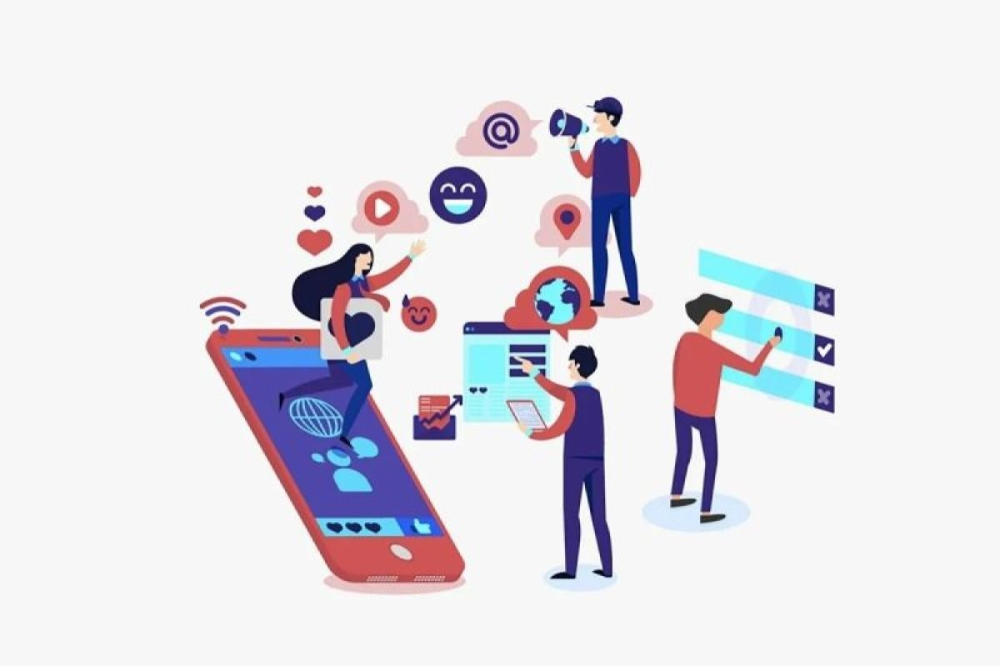
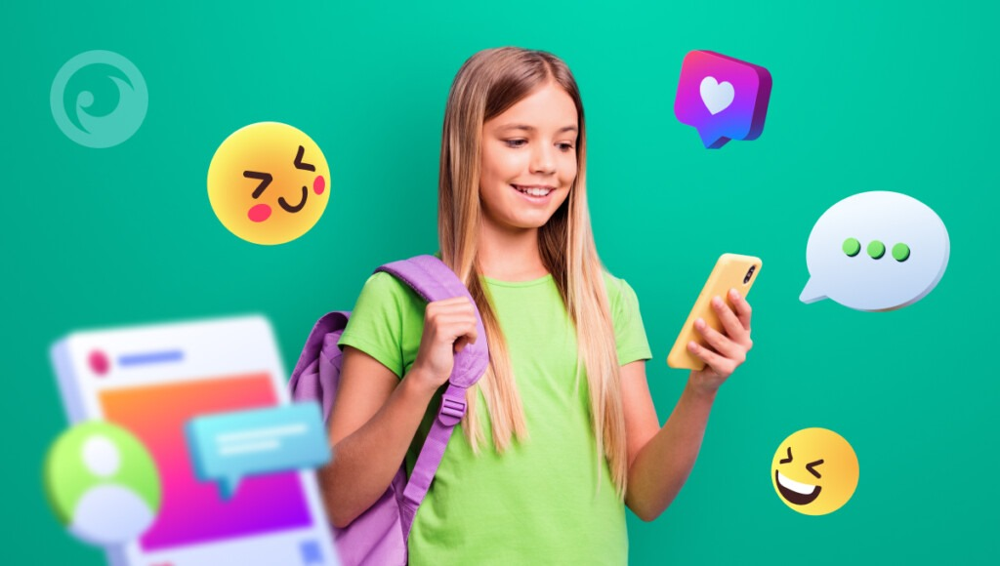

WHAT'S THE SOLUTION?
 
LET’S RECAP FIRST…
Media sosial itu telah menjadi sarana yang luas untuk remaja, menyediakan koneksi yang ga terbatas tapi juga ada potensi bahaya yang signifikan. Permasalahan yang muncul ga hanya sebatas pada kecanduan, tetapi juga mencondong ke kesehatan mental, interaksi sosial, dan bahkan pembentukan identitas diri. Untuk mengatasi masalah ini, solusi yang dilaksanakan perlu bersifat efektif dan melibatkan berbagai pihak. Pendidikan menjadi fokus utama; remaja itu perlu dibekali dengan literasi media yang kuat, kemampuan untuk membedakan antara informasi yang terpercaya dan yang tidak, serta pemahaman tentang jejak digital yang mereka tinggalkan. Sekolah dapat melibatkan kurikulum yang mengajarkan etika bermedia sosial, sementara orang tua bisa berperan sebagai mentor yang membimbing anak-anak mereka dalam dunia digital. Pengawasan orang tua, yang seringkali dianggap sebagai tindakan terlalu mencampuri urusan anak, sebenarnya merupakan bentuk kepedulian. Ini bukan tentang membatasi kebebasan anak, tetapi tentang memberikan arahan dan dukungan.
Orang tua perlu membangun komunikasi yang terbuka dengan anak-anak mereka, menciptakan ruang di mana mereka dapat berbagi pengalaman dan kekhawatiran tanpa rasa takut dihakimi. Batasan waktu penggunaan media sosial juga perlu diterapkan, bukan sebagai hukuman, tetapi sebagai cara untuk mendorong keseimbangan antara dunia maya dan dunia nyata. Aktivitas di luar ruangan, interaksi sosial tatap muka, dan pengembangan hobi bisa menjadi alternatif yang sehat dan memperkaya. Di sisi lain, remaja itu sendiri perlu mengembangkan kesadaran diri yang kuat. Mereka perlu memahami bahwa validasi diri tidak datang dari jumlah "like" atau komentar, tetapi dari nilai-nilai dan pencapaian pribadi mereka. Pengendalian diri juga penting; kemampuan untuk membatasi waktu penggunaan media sosial, untuk memilih konten yang positif, dan untuk menghindari perbandingan sosial yang tidak sehat. Dalam hal ini, peran sekolah dan komunitas sangatlah penting. Sekolah dapat menyelenggarakan program-program ekstrakurikuler yang menarik, mengadakan lokakarya tentang kesehatan mental, dan menyediakan konseling bagi siswa yang membutuhkan dukungan. Komunitas dapat menciptakan ruang-ruang aman di mana remaja bisa berinteraksi, berkolaborasi, dan mengembangkan minat mereka. Dengan pendekatan yang komprehensif ini, diharapkan remaja dapat memanfaatkan media sosial sebagai alat yang positif, bukan sebagai sumber tekanan dan kecemasan.
THIS IS WHAT WE SHOULD DO!
Dalam era digital yang serba cepat ini, media sosial telah merasuk ke dalam setiap aspek kehidupan remaja, membentuk cara mereka berinteraksi, belajar, dan bahkan memahami diri mereka sendiri. Namun, di balik kemudahan dan konektivitas yang ditawarkan, tersembunyi berbagai risiko yang mengancam kesejahteraan mental dan emosional mereka. Oleh karena itu, solusi yang efektif haruslah bersifat multidimensi, melibatkan sinergi antara individu, keluarga, sekolah, dan masyarakat secara luas. Salah satu aspek besar yang sering dianggap remeh adalah pengembangan kecerdasan emosional. Remaja perlu diajarkan untuk mengenali dan mengelola emosi mereka sendiri, serta memahami emosi orang lain. Ini penting untuk menghadapi tekanan sosial, cyberbullying, dan perbandingan yang tidak sehat di media sosial. Sekolah dapat mengintegrasikan program-program pelatihan kecerdasan emosional ke dalam kurikulum, sementara orang tua dapat menjadi teladan dalam mengelola emosi secara sehat.
Selain itu, penting untuk menciptakan lingkungan yang mendukung kesehatan mental remaja. Ini berarti mengurangi topik seputar masalah kesehatan mental, menyediakan akses yang mudah ke layanan konseling, dan mendorong remaja untuk mencari bantuan ketika mereka membutuhkannya. Media sosial itu sendiri dapat digunakan sebagai alat untuk meningkatkan kesadaran tentang kesehatan mental dan mempromosikan dukungan sebaya. Kita juga perlu mengatasi masalah disinformasi dan hoaks yang merajalela di media sosial. Remaja perlu dibekali dengan keterampilan berpikir kritis untuk membedakan antara fakta dan fiksi. Ini melibatkan kemampuan untuk mengevaluasi sumber informasi, mengidentifikasi bias, dan menghindari penyebaran informasi yang tidak akurat. Sekolah dapat menyelenggarakan sarana tentang literasi digital, sementara platform media sosial dapat menerapkan algoritma yang lebih baik untuk mendeteksi dan menandai konten yang menyesatkan.